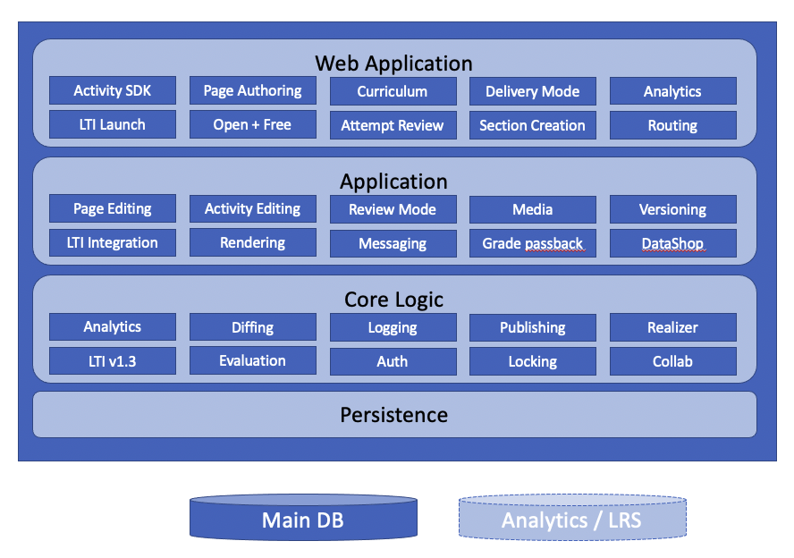

View Source Introduction
Torus is a learning engineering platform for authoring, delivering and improving online courses.
Key Features
- Automated Course Project Lifecyle Authors can make edits and "push a button" to have those edits made available to end users
- Tight LMS Integration Torus is accessible from any LTI 1.3 compliant LMSes, and Torus defers to those LMSes roster management, gradebook and other functionality
- Run-time extensibility The system can have new content types and learning activities added to it at run-time by third party developers
- Simon Ecosystem Integration Torus will enable deep integrations with existing and future Simon Ecosystem projects
- Learning Engineering Centric UX Learning engineering science and best practies embedded in the UI/UX guide users through effective course creation
Key Design and Technical Considerations
The following are the key non-functional requirements and considerations that fuel Torus technology and design choices:
- Usability Torus must be understandable and approachable by new users, especially those unfamiliar with learning engineering concepts
- Extensibility - Several aspects of the system are designed to be extended. The main focus of system extensibility is to support the development of new student-facing learning activities.
- Interoperability - Torus is designed to interoperate seemlessly with external systems such as Learning Management Systems, using relevant industry standards
- Scalability Torus must scale to 10x to 100x the user load of the current OLI system, which at peak usage levels sees around 1,000 reqs/min
Technology Stack Overview
Elixir/Phoenix
All server side code in Torus is implemented in Elixir using the Phoenix web application framework.
Torus also powers client-side UIs with Elixir code via Phoenix LiveView.
TypeScript/React
The limited amount of pure client-side code in Torus is written in TypeScript and utilises React for UI.
Postgres
Primary data storage uses Postgres RDBMS.
Architectural Overview
Torus is implemented in an architecture that resembles that of a traditional monolithic web-based application. There is a single application server that handles end user requests from web browser clients through a layered set of services that ultimately access the persistence layer.
A diagram of this architecture at a conceptual level is as follows:

Torus is designed to take advantage of Phoenix clustering support and Distributed Erlang to meet scalability and performance requirements. The various "Applications" that comprise Torus can be replicated across and run on any number of Erlang nodes that are part of the cluster. This allows Torus to mimic modern, scalable service based architectures by varying its deployed configuration.